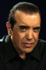

Country:United States, 106 minutes
Spoken languages:Spanish, English, French, Hungarian
Genres:Drama, Crime, Thriller
Director(s):Bryan Singer
Writer(s):Christopher McQuarrie
Video Codec:Unknown
Number: 2334


Certification:R
Storyline:
Held in an L.A. interrogation room, Verbal Kint attempts to convince the feds that a mythic crime lord, Keyser Soze, not only exists, but was also responsible for drawing him and his four partners into a multi-million dollar heist that ended with an explosion in San Pedro harbor – leaving few survivors. Verbal lures his interrogators with an incredible story of the crime lord's almost supernatural prowess.
Cast: 


Medium: Original DVD,
Loaned: No
Aspect ratio: Unknown